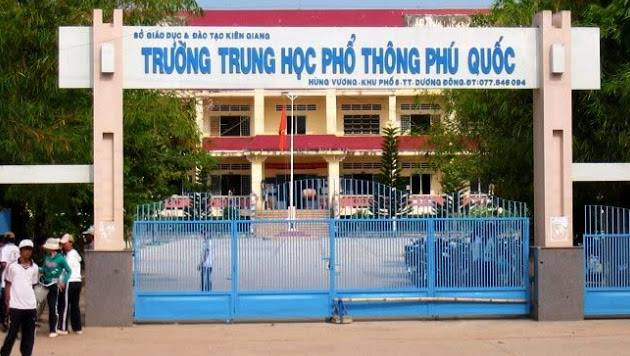

TRƯỜNG TRUNG HỌC PHỔ THÔNG PHÚ QUỐC
Địa chỉ: 18 Hùng Vương, Kp. 11, P. Dương Đông, Tp. Phú Quốc, T. Kiên Giang
Địa chỉ: 18 Hùng Vương, Kp. 11, P. Dương Đông, Tp. Phú Quốc, T. Kiên Giang
Trường THPT Phú Quốc nằm trên địa bàn thị trấn Dương Đông, khu trung tâm hành chính của huyện đảo Phú Quốc, thuộc Khu phố 5 – Thị trấn Dương Đông - Tỉnh Kiên Giang. Đây là ngôi trường THPT đầu tiên và có quy mô lớn nhất trên huyện đảo. Nhà trường có bề dày trên 30 năm xây dựng, trưởng thành và phát triển. Hiện nay đơn vị là một trong những cơ sở giáo dục có quy mô lớn của huyện đảo Phú Quốc, góp phần không nhỏ vào việc đào tạo, giáo dục con người, cung cấp nguồn nhân lực cho địa phương. * Những chặng đường phát triển của trường: + Thuở khai sinh - Sau ngày Giải phóng đất nước 30/4/1975 đến trước những năm Đổi mới đất nước 1986, do dân số ở huyện đảo còn ít nên chỉ mới thành lập được một vài điểm cơ sở giáo dục cấp tiểu học và trung học cơ sở. Những học sinh học xong cấp cơ sở, muốn học tiếp cấp 3 phải vào đất liền. - Ngày 9 tháng 4 năm 1987, theo Quyết định số 189/QĐ của Bộ trưởng Bộ Giáo dục, trường PTTH Phú Quốc được công nhận “đủ điều kiện là trường PTTH theo quy chế của Bộ Giáo dục” + Giai đoạn trưởng thành và phát triển - Từ 1987 – 1991: Vị trí của trường PTTH Phú Quốc đóng ở Khu phố 1 – Thị trấn Dương Đông – Phú Quốc (Hiện tại là trường Trung học cơ sở Dương Đông 2). Lúc mới thành lập là trường cấp 2 – 3. - Từ 1993, trường chuyển lên ở vị trí hiện nay thuộc khu phố 5 – thị trấn Dương Đông với 1 dãy trệt. Do dân số trên đảo ngày càng tăng, số lượng học sinh ngày càng nhiều nên từ 1997 phát triển thành 2 dãy trệt. Năm 2003 khu tầng lầu với 1 tầng hầm (dành cho nơi để xe đạp của học sinh) và 3 tầng khang trang được đưa vào sử dụng. Quy mô trường lớp của trường PTTH Phú Quốc ngày càng bề thế. Năm học 2008 – 2009 là năm trường THPT Phú Quốc có quy mô lớn bậc nhất toàn tỉnh Kiên Giang với 139 cán bộ, giáo viên, gần 2.500 học sinh được chia làm 59 lớp. Do trường quá tải nên trên huyện đảo được thành lập thêm 1 trường mới là trường THPT Dương Đông (cách trường THPT Phú Quốc khoảng 3km). Từ năm 2010 chuyển 10 lớp khối 10 về trường THPT Dương Đông (từ 10A13 – 10A22). - Năm học 2017 – 2018, số lượng học sinh của nhà trường là 1.421 được chia thành 35 lớp học. Về cơ sở vật chất, nhà trường có đủ số lượng phòng học phục vụ nhu cầu dạy học 2 buổi/ngày, có 3 phòng học bộ môn, 3 phòng máy vi tính, 12 phòng học có gắn tivi màn hình lớn và 1 phòng trình chiếu nghe nhìn với hệ thống bảng tương tác. Số lượng giáo viên nhân viên của trường là 88, Ban giám hiệu: 4, nhân viên: 6, giáo viên đứng lớp là 78, 100% đều đạt chuẩn, được biên chế thành 7 tổ với số lượng cụ thể như sau: Tổ Toán – Tin: 13, Tổ Lý-Công nghệ: 10, Tổ Hóa – Sinh: 13, Tổ Ngữ văn: 13, Tổ Sử – Địa – GDCD: 12, Tổ tiếng Anh: 9, Tổ TD – GDQP: 8. Hoạt động của nhà trường diễn ra trong điều kiện giáo dục Phú Quốc có bước phát triển đồng bộ, đội ngũ giáo viên nhà trường có tuổi đời và tuổi nghề tương đối trẻ, phần lớn được đào tạo bài bản, nhiệt huyết với sự nghiệp trồng người, nhạy bén trong việc tiếp thu với cái mới, có thuận lợi rất lớn trong việc thực thi chủ trương đổi mới căn bản, toàn diện giáo dục đáp ứng nhu cầu hội nhập quốc tế. Trong nhiều năm liên tục, Đảng bộ nhà trường luôn giữ danh hiệu xuất sắc; Nhà trường luôn nằm trong tốp đầu về danh hiệu Học sinh giỏi cấp Tỉnh; Tỉ lệ đậu Đại học – Cao Đẳng hàng năm luôn trên 40% số lượng thí sinh tốt nghiệp THPT; Công Đoàn, Đoàn Thanh niên của trường luôn là những lá cờ đầu trong mọi phong trào thi đua của huyện đảo Phú Quốc. Hiện tại, trường THPT Phú Quốc đang có tập thể sư phạm đoàn kết, đồng lòng, lực lượng giáo viên năng động, nhiệt tình (trên 20 thạc sĩ), cơ sở vật chất ngày càng khang trang và trong tương lai không xa trường THPT Phú Quốc sẽ cất cánh phấn đấu đạt chuẩn Quốc gia vào năm 2020./.
Trường THPT Phú Quốc nơi ươm mầm tri thức và chắp cánh ước mơ cho biết bao thế hệ học sinh trên vùng đất thân thương. Với bề dày truyền thống dạy và học, ngôi trường không chỉ là nơi truyền đạt kiến thức, mà còn là mái nhà chung nuôi dưỡng nhân cách, tình yêu thương và khát vọng vươn lên. Từng dãy phòng học, từng hàng cây sân trường đều ghi dấu bao kỷ niệm tuổi học trò hồn nhiên, trong sáng. Dưới sự dẫn dắt tận tâm của đội ngũ thầy cô giáo đầy nhiệt huyết và yêu nghề, học sinh THPT Phú Quốc luôn được khơi dậy niềm say mê học tập, được tạo điều kiện phát triển toàn diện cả về trí tuệ lẫn tâm hồn. Trường THPT Phú Quốc không chỉ là điểm đến của tri thức, mà còn là nơi bắt đầu cho hành trình trưởng thành và thành công của bao người con Phú Quốc mai sau.